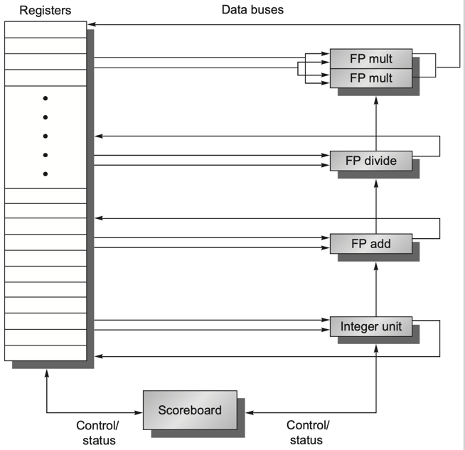
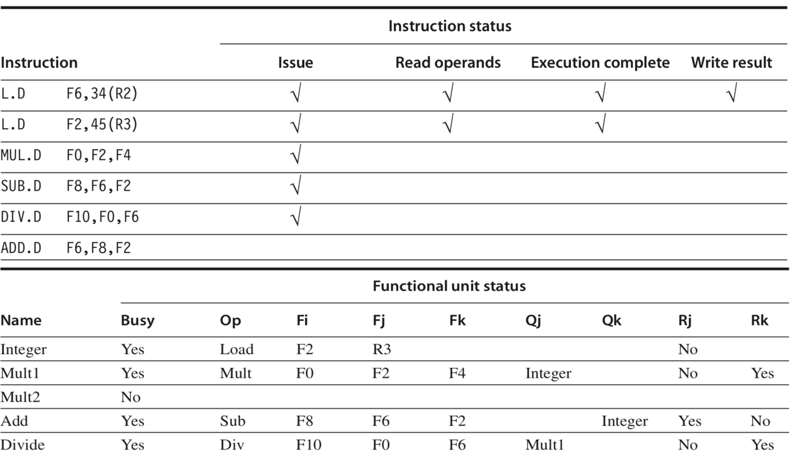
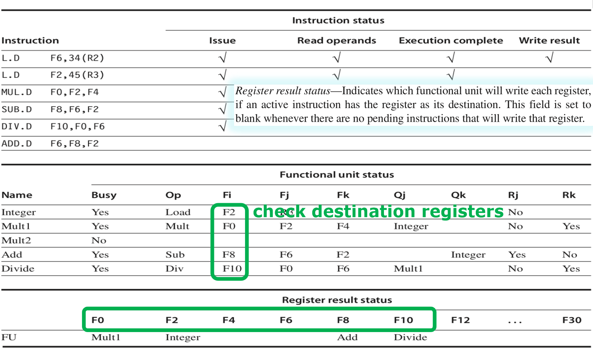

计算机体系结构3-1-2:Scoreboarding
第二节：Scoreboarding
记分牌算法最早应用于 1964 年的 CDC 6600 超级计算机，它是动态调度的开山之作。它的设计哲学非常直观：建立一个集中式的信息中心（记分牌），来统一监控和管理整个流水线中所有指令和硬件资源的状态。 任何指令想要进入下一步，都必须先向记分牌“请示”，获得批准后方可行动。
2.1 记分牌的体系结构：三大核心状态表
这个所谓的“信息中心”，具体是由三张紧密关联的状态表构成的。让我们逐一剖析它的设计。

1. 指令状态表 (Instruction Status)
这张表回答了最基本的问题：“每条正在执行的指令，进行到哪一步了？”
它为每一条从发射（Issue）到写回（Write Back）的指令维护一个条目，跟踪其在以下四个逻辑阶段的进展：
- Issue (发射)：指令已被译码，并分配给一个功能单元。
- Read Operands (读操作数)：指令正在等待其源操作数变为可用。一旦可用，它就会读取这些操作数。
- Execution Complete (执行完成)：功能单元已经完成了计算。
- Write Result (写回结果)：指令已经将结果写回目标寄存器。
设计思考：为什么是这四个阶段？这其实是动态调度对传统流水线阶段的重新抽象。Issue 和 Read Operands 共同取代了 ID 阶段，Execution Complete 对应 EX 的完成，Write Result 对应 WB。注意，为了简化，早期的记分牌主要关注浮点运算，因此暂时忽略了访存（MEM）阶段。
2. 功能单元状态表 (Functional Unit Status)
这张表从硬件资源的角度回答了：“每个功能单元（FU）现在正在干什么，它的状态如何？”
系统中有多少个功能单元（如一个整数单元，两个乘法器，一个除法器），这张表就有多少行。每一行包含了九个关键字段，这是记分牌的核心所在：
Busy：布尔值。Yes表示该 FU 正在被使用。Op：操作。记录该 FU 正在执行何种操作，如ADD、MUL、LOAD。Fi：目标寄存器 (Destination)。该操作的结果将要写入哪个寄存器。Fj,Fk：源寄存器 (Sources)。两个源操作数分别来自哪个寄存器。Qj,Qk：源功能单元。这是处理真数据依赖（RAW）的关键！ 如果源操作数Fj尚未就绪（即正在被另一条指令计算），Qj字段就会记录正在产生Fj的那个功能单元的名字。如果Fj已经就绪（值在寄存器中），Qj字段就为空。Qk同理。Rj,Rk：源操作数就绪标志。这是处理写后读（WAR）相关的关键！Rj为No表示虽然Fj的值可能已经在寄存器中了（Qj为空），但本 FU 还未读取它。一旦读取，Rj就设为Yes。这个标志告诉系统，FU 是否还在依赖寄存器的旧值。
设计思考：Q 字段和 R 字段的设计非常精妙。Q 字段建立了一个生产者-消费者的数据流图（“我在等谁”），而 R 字段则标记了消费动作是否完成（“我已经拿到货了”）。二者结合，为处理数据相关提供了必要的信息。
3. 寄存器结果状态表 (Register Result Status)
这张表从寄存器的角度回答了：“哪个寄存器正在等待被写入，由谁来写？”
它为每一个寄存器（如 F0-F31）维护一个条目。
- 内容：如果当前没有任何指令要写入该寄存器，则该条目为空。如果有一条活跃指令的目标是该寄存器，则该条目记录正在为它产生结果的那个功能单元的名字。
设计思考：这张表的作用是快速检测写后写（WAW）和真数据依赖（RAW）。当一条新指令要发射时，
- 它需要检查自己的目标寄存器
Fi在这张表里是否为空。如果不为空，说明已经有别的指令要写这个寄存器了，发生了 WAW 相关，必须停顿。 - 它还需要检查自己的源寄存器
Fj,Fk在这张表里是否为空。如果不为空，说明源操作数还没准备好，这张表告诉了它应该去等哪个 FU（然后把这个 FU 的名字填入自己 FU 状态表的Qj/Qk字段）。
2.2 记分牌算法流程：指令生命周期的四部曲
理解了这三张表，我们就能完整地描述一条指令在记分牌控制下的生命周期。
-
Issue (发射阶段) 一条指令从指令队列的头部被取出，尝试发射。记分牌会进行两项检查：
- 结构相关检查：该指令需要的功能单元是否空闲（查询 FU 状态表的
Busy字段）？ - WAW 相关检查：该指令的目标寄存器
Fi是否正在被其他指令作为目标（查询寄存器结果状态表的Fi条目是否为空）？
决策：只有当两个检查都通过时，指令才能成功发射。否则，指令停顿在发射阶段，并且其后的所有指令都必须等待。这是记分牌的一个重要瓶颈。 动作：如果成功发射，记分牌会： a. 更新 FU 状态表：将对应 FU 的
Busy设为Yes，并填入Op,Fi,Fj,Fk等信息。 b. 检查源寄存器Fj,Fk的状态，设置Qj,Qk和Rj,Rk字段。 c. 更新寄存器结果状态表：将Fi条目设为本 FU 的名字。 d. 更新指令状态表：标记该指令进入“Issue”状态。 - 结构相关检查：该指令需要的功能单元是否空闲（查询 FU 状态表的
-
Read Operands (读操作数阶段) 指令在 FU 中等待其源操作数。
- 检查：记分牌持续监控所有 FU 的写回操作。当某个 FU 完成写回时，它会广播其结果和自己的名字。记分牌会检查所有 FU 状态表中的
Qj,Qk字段，如果哪个字段的名字与刚完成的 FU 匹配，就将其清空，表示它等待的操作数已经就绪。 - 决策：当一条指令所在 FU 的
Qj和Qk字段都为空时，意味着所有源操作数都已在寄存器中就绪。 - 动作：指令可以从寄存器堆中读取操作数，并立即将自己的
Rj,Rk标志位置为Yes。指令状态进入“Read Operands”完成状态。
- 检查：记分牌持续监控所有 FU 的写回操作。当某个 FU 完成写回时，它会广播其结果和自己的名字。记分牌会检查所有 FU 状态表中的
-
Execution (执行阶段) 一旦操作数被读取，FU 就开始执行计算。这个过程可能需要多个时钟周期。记分牌只需等待 FU 发出“执行完成”的信号。
-
Write Back (写回阶段) 计算完成后，指令准备将结果写回目标寄存器
Fi。- WAR 相关检查：这是记分牌设计中最微妙也最关键的一步。在写回之前，必须确保没有其他更早发射的指令还需要读取
Fi的旧值。记分牌如何检查？它会遍历所有 FU 的状态表，检查它们的Fj和Fk字段。 - 决策：如果存在任何一个 FU，其
Fj或Fk等于当前指令的Fi，并且其对应的Rj或Rk标志位为No，则说明有指令还没来得及读取旧值，发生了 WAR 相关。当前指令必须停顿在写回阶段，直到所有需要旧值的指令都读取完毕（即所有相关的R标志位变为Yes）。 - 动作：WAR 检查通过后，指令执行写回：
a. 更新寄存器堆。
b. 广播自己的名字，以便其他等待它的指令（在其
Qj/Qk中记录了本 FU）更新状态。 c. 释放资源：清空自己所在的 FU 状态表条目，清空寄存器结果状态表中对应的条目。
- WAR 相关检查：这是记分牌设计中最微妙也最关键的一步。在写回之前，必须确保没有其他更早发射的指令还需要读取
2.3 实例详解：一步步看懂记分牌
让我们用 经典例子，来手动模拟一遍记分牌的工作流程。假设我们有以下指令序列和硬件资源：1 个整数单元，2 个乘法单元（Mult1, Mult2），1 个加法单元，1 个除法单元。
L.D F6, 34(R2)
L.D F2, 45(R3)
MUL.D F0, F2, F4
SUB.D F8, F6, F2
DIV.D F10, F0, F6
ADD.D F6, F8, F2
我们来追踪一个关键时刻的状态，如下所示的状态。这个状态是：所有指令都已发射，第一条 L.D 已经执行完毕但尚未写回，第二条 L.D 正在执行。
 
让我们来解读这张复杂的表格，理解“为什么”是这个状态：
指令状态表分析：
L.D F6, 34(R2)：已完成执行，但在“Read Operands”列打勾，实际应理解为停在写回前。为什么停？因为它要写的 F6 被SUB.D当作源，而SUB.D还未读F6（Rj为No），存在 WAR 相关。L.D F2, 45(R3)：已读操作数（地址 R3），正在执行（计算有效地址/访存）。MUL.D F0, F2, F4：已发射，但停在“读操作数”阶段。因为它需要 F2，而 F2 正在由第二条L.D(在 Integer 单元)产生。SUB.D F8, F6, F2：已发射，停在“读操作数”。它需要 F6 和 F2，F6 在寄存器中但未读，F2 在等待L.D产生。DIV.D F10, F0, F6：已发射，停在“读操作数”。它需要 F0 和 F6，F0 在等待MUL.D产生，F6 在寄存器中但未读。ADD.D F6, F8, F2：注意，这条指令在真实情况下会被阻塞在发射阶段，因为它的目标 F6 与第一条L.D相同，存在 WAW 相关。记分牌不允许在第一条L.D写回前发射这条指令。
功能单元状态表分析 (最核心)：
Integer(用于 L.D)：Busy=Yes,Op=Load, 目标Fi=F2。它正在为第二条L.D服务。Mult1：Busy=Yes,Op=Mult, 目标Fi=F0。源是F2和F4。Qj=Integer表明它在等 Integer 单元产生 F2。Qk为空表明 F4 是就绪的。Mult2：Busy=No。空闲。Add：Busy=Yes,Op=Sub, 目标Fi=F8。源是F6和F2。Qk=Integer表明它在等 Integer 单元产生 F2。Qj为空表明 F6 是就绪的。Rj=No表明它还没读 F6。Divide：Busy=Yes,Op=Div, 目标Fi=F10。源是F0和F6。Qj=Mult1表明它在等 Mult1 单元产生 F0。Qk为空表明 F6 就绪。Rk=No表明它还没读 F6。
寄存器结果状态表分析：
F0：将被Mult1写入。F2：将被Integer单元（即第二条L.D）写入。F8：将被Add单元（即SUB.D）写入。F10：将被Divide单元写入。- 其他寄存器（如F4, F6）为空，表示它们的值是稳定、可读的。
通过这个例子，我们可以清晰地看到记分牌是如何通过这三张表，像一个“全知全能”的中央控制器一样，精确地追踪了指令间的依赖关系，并据此来决定每一步的操作。
2.4 对记分牌的批判性思考：设计的局限性
记分牌作为动态调度的先驱，其设计思想是革命性的。它首次证明了硬件有能力在运行时安全地实现乱序执行。但是，站在今天的角度看，它的设计存在诸多局-限性，这些局限性也正是驱动后续算法（如 Tomasulo 算法）诞生的根本原因。
- 集中化的控制瓶颈：所有的依赖检查和状态更新都由一个集中的记分牌逻辑完成。随着功能单元和指令窗口的增大，这个中央控制器的复杂度和通信开销会急剧上升，成为新的性能瓶颈。
- 对 WAW 和 WAR 相关的处理过于保守：
- WAW (写后写)：在发射阶段检测到 WAW 相关就直接停顿。这阻塞了整个流水线的指令供给。
- WAR (写后读)：在写回阶段检测到 WAR 相关才停顿。虽然没有阻塞发射，但它让一个已经完成计算的功能单元无法释放，占用了宝贵的硬件资源。
- 缺乏寄存器重命名 (Register Renaming)：这是导致 WAW 和 WAR 问题无法被高效解决的根本原因。
ADD.D F6, F8, F2这条指令与L.D F6, 34(R2)竞争 F6 寄存器，这其实是一种伪相关（Name Dependency），因为它们计算的值毫无关系，只是碰巧用了同一个寄存器名字。记分牌无法区分这种伪相关和真正的数据依赖，只能保守地停顿。 - 结构相关导致发射停顿：一旦发射阶段因为找不到空闲 FU 或 WAW 相关而停顿，后续所有指令，哪怕是完全独立的指令，都无法发射。这极大地限制了处理器能够“看到”和调度指令的范围（这个范围我们称之为指令窗口 (Instruction Window)）。
总而言之，记分牌的设计哲学是“检测并等待”。它能发现问题，但解决问题的方式主要是“停下来”。虽然相比于纯粹的按序执行已经是一大进步，但这种“等待”的策略，依然浪费了大量的性能潜力。
如何才能从“检测并等待”进化到“检测并绕过”？如何从根本上消除伪相关带来的束缚？这就是我们下一讲要学习的，更为先进的 Tomasulo 算法所要解决的问题。